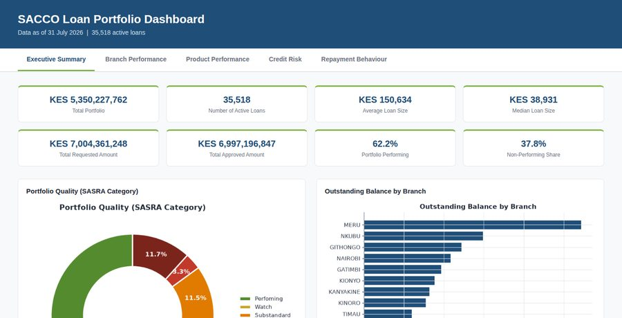

Featured
Data Analysis · Dashboard
Loan Portfolio Analysis
A SACCO loan book of 35,518 active loans, analyzed for portfolio growth, loan quality, product and branch performance, credit risk, and recovery.
View Case Study